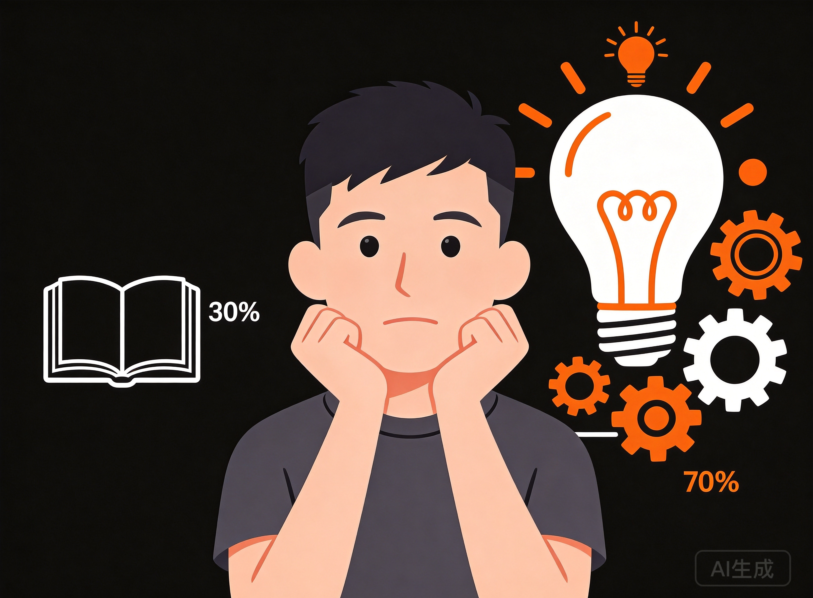

1个Skill
AI帮你榨干一篇论文
和Lee一起学AI · 学得懂，用得上
🦉
1/12
读论文，你也是这样？
从头读到尾，划线、做笔记——
然后脑子一片空白。
问题出在哪？
🦉
2/12
凌晓峰 × 杨强《学术研究》给出了答案
30% 读
70% 想
🦉
3/12
30%读·70%想
读不是目的
产生想法才是

🦉
4/12
批判性思考
追着作者问
你的假设成立吗？
方法有没有缺陷？
别把论文当圣经
🦉
5/12
创造性思考
你能不能想出更好的解法？
作者没想到的，才是你的机会
🦉
6/12
future work是陷阱？
作者写进未来的，大概率已经在做了
🦉
7/12
扎心的是
顺着别人的思路跑，
你永远找不到自己的课题。
你只是在帮别人做他们来不及做的事
🦉
8/12
记住这个比例
30%
读
70%
想
论文是你的跳板
不是你的终点站
🦉
9/12
下次读论文，问自己
作者哪里可能错了？
我怎么做得更好？
这个方向还能往哪走？
🦉
10/12
这个Skill，我做好了
评论区回复"Skill"
直接拿！
关注我，下期见 👇
🦉
11/12
下期预告
棋盘法选题
如何找到没人做过的研究方向
和Lee一起学AI · 学得懂，用得上
🦉
12/12